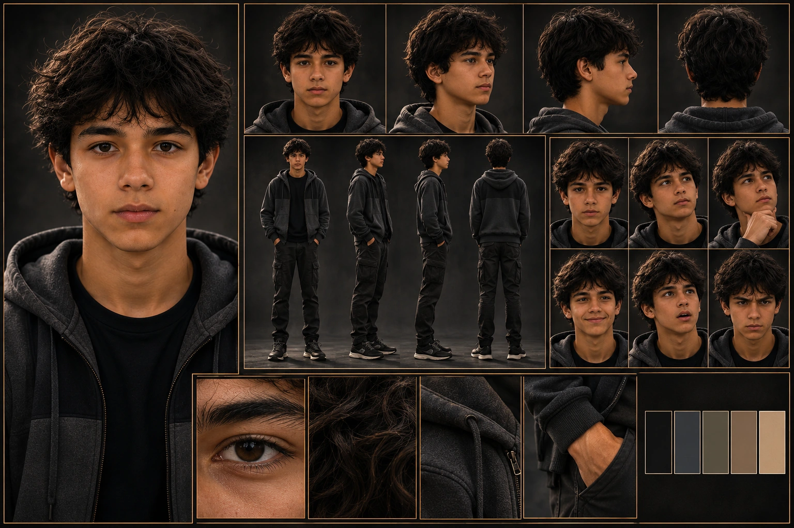

ХАРАКТЕР І ПОВЕДІНКА
Спокійний спостерігач із практичним поглядом
Кайр не поспішає багато говорити, але уважно дивиться на людей і навколишній простір. Він помічає зміни в роботі систем, прислухається до технічних звуків і швидко орієнтується в знайомому середовищі. У незнайомих ситуаціях не втрачає спокою й зазвичай відповідає коротко.
У спілкуванні з Артемом, Денисом і Владом поступово стає відкритішим. Його стриманість поєднується з почуттям гумору та готовністю підтримати дружню суперечку. Він не намагається нав'язати друзям власні звички, але спокійно пояснює, чому деякі речі влаштовані саме так.
СЮЖЕТНА ЛІНІЯ
Знайомство з новим світом
У другій книзі Кайр знайомиться з Артемом, Денисом і Владом та показує їм підземне місто не як набір коридорів і секторів, а як живий простір зі своїми системами, майстернями й повсякденними маршрутами. Хлопці разом досліджують місто, їздять транспортом і згодом виходять на поверхню. Для Кайра це теж особливий досвід: він звик до підземного життя й інакше сприймає відкритий простір, небо та звичайні речі поверхневого світу.
У навчанні Кайр виявляє уважність до медичних показників. Під час практичних занять він знаходить важливі ознаки, які інші учні пропускають, і робить правильні висновки ще до повного аналізу всіх даних. Інструктор окремо звертає увагу на його здатність помічати потрібні показники серед багатьох інших.
У третій книзі, під час нападу на планету-курорт, Кайр разом з Артемом перебуває на медичних заняттях у підземному місті Першого плану. Вони допомагають медикам: перевіряють параметри капсул і підбирають потрібні режими для поранених. Під час обстрілів хлопці продовжують працювати уважно й без зайвої метушні.
НАВИЧКИ
Спостережливість і робота з медичними капсулами
Текст показує Кайра як уважного спостерігача, який добре орієнтується в технічному середовищі й помічає деталі, що залишаються непомітними для інших. Він може розпізнати незвичний звук старої системи та оцінити її стан за непрямими ознаками.
Під час медичної підготовки Кайр демонструє інтуїтивне розуміння показників пацієнта й налаштувань медичних капсул. Разом з Артемом він підбирає режими роботи капсул для поранених. У наданих фрагментах це описано як здібність до швидкого аналізу й практичного застосування знань; окрему надприродну силу Кайрові не приписано.
ВІЗУАЛЬНИЙ ПАТЕРН
Зовнішність та образ
Зовнішність
Візуальний референс задає темне густе кучеряве волосся, темні очі, смагляву шкіру та підліткові риси обличчя. Числовий вік, зріст і точні фізичні параметри в сюжетному тексті не підтверджені.
Одяг і кольорова гама
Основний образ — темна футболка та сіро-чорне худі. Палітра стримана: чорний, графітовий, темно-сірий і природні відтінки шкіри.
Канон і джерела
Сюжетний опис звірено з наданими редакціями другої та третьої книг. Друга книга містить знайомство з друзями, життя в підземному місті, спільні прогулянки та медичне навчання. Третя книга показує Кайра під час медичної роботи в умовах нападу. Зовнішність і одяг деталізовані за наданим авторським референсом; непідтверджені числові параметри не вигадувалися.